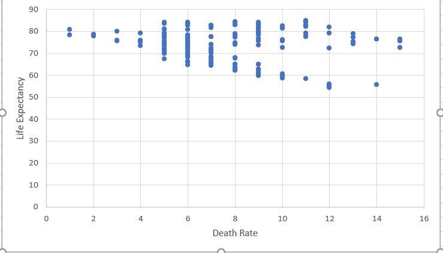

Uncovering the weird relationship
The Blue Countries are the ones that are have a life expectancy greater that 70 and death rate greater than 8/1000 people
The Red Countries are the ones that are have a life expectancy less that 70 and death rate greater than 8/1000 people
CHART
